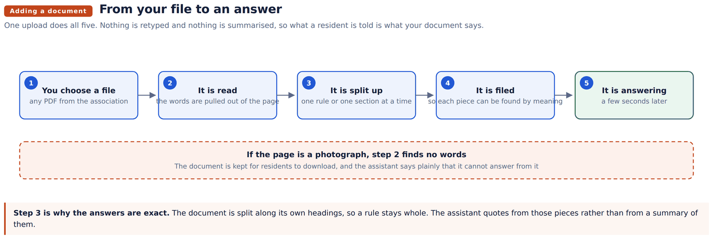
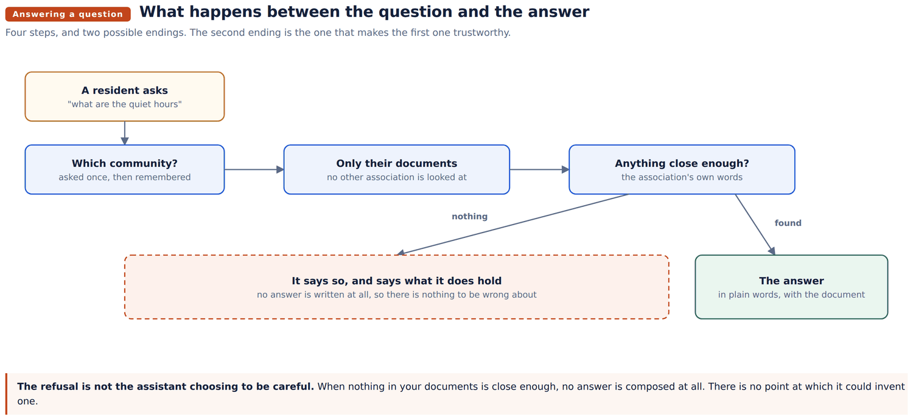
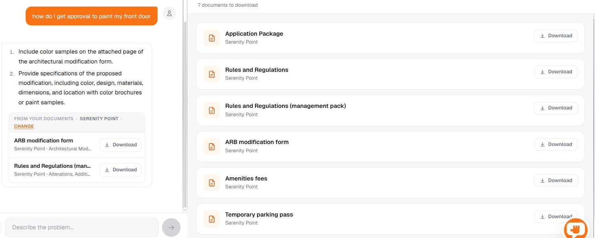
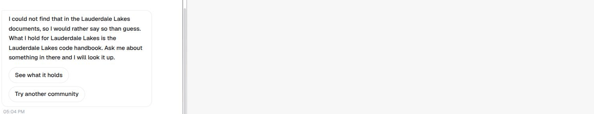

In plain language
How the community assistant answers
Where the answers come from, what happens between a resident's question and the reply, and what the assistant does when your documents do not cover it.
Abad Naseer · 27 August 2026 · every behaviour checked against the live server
Your community assistant answers residents from your association's own documents. This page explains how, in plain language, and what happens when it cannot answer.
There is one idea underneath all of it. The assistant does not know anything about your community. It reads your documents at the moment somebody asks, and everything it says comes from what it found there. Nothing is memorised, and nothing is carried over from one association to another.
That is what makes it safe to put in front of residents, and it is also why the documents you give it matter more than anything else on this page.

You choose a PDF on the admin screen and that is the whole job. The words are pulled out of the page, the document is split along its own headings so a rule stays whole, and each piece is filed so it can be found later by meaning rather than by exact words. A resident can ask about it a few seconds afterwards.
Removing one is the same in reverse, and just as quick. A rule that has been superseded stops being quoted the moment you take the document away.
A scanned page is a picture, not text. When there are no words to pull out, the assistant says so and keeps the file for residents to download instead. It will not pretend to answer from a photograph of a page.

Four steps. The assistant works out which association the resident belongs to, asks once if it does not know, and then looks only in that association's documents. Another community's rules are not considered, however similar the question.
Then it looks for anything close enough to what was asked. If it finds something, it puts the answer into plain words and shows the document it came from.

The answer comes first. Underneath it is the document it was drawn from, with the section named, ready to open or download. On the right is everything else that association holds, each with its own download.
Where the question is about a procedure, the answer is written out as numbered steps and the form is attached to it.

This is the part worth understanding, because it is the part that makes the rest trustworthy.
When nothing in the association's documents is close enough to the question, no answer is written at all. The assistant does not compose something and then decide whether to show it. There is no point at which an answer could be invented, because none is produced.
What the resident gets instead is the truth: that it could not find it, what that association does hold, and two ways to carry on.
Two things follow from this that are worth knowing.
are asking about something the assistant cannot answer, that is a signal about what to send us next.
acting on a confidently stated rule that does not govern their home is a complaint, and possibly worse.
question when answering another's.
associations currently hold almost nothing, and residents there can be asked almost nothing.
contradicts itself, it reports both and names each source, because choosing would mean inventing a rule.
Every answer is either taken from a document you gave it, and shown alongside that document, or it is an honest "I do not have that".